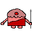

There will be more coming real soon.
 Meanwhile, why not try out these "entertainments" I made some 20 years ago.
SimpleX is a consultative expert system shell that runs in a web browser. You can create knowledge bases composed of actions, rules & requests, and can perform a consultation.
Typo is a training tool to help you learn touch typing and improve your skill.